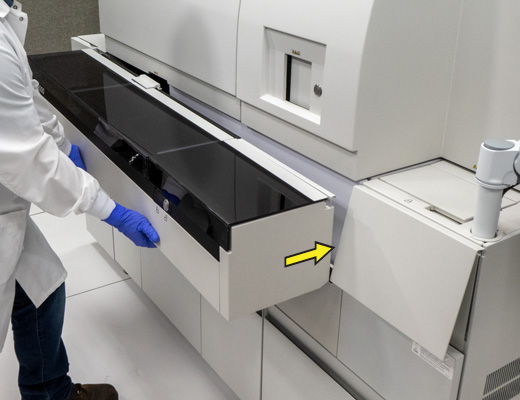

Replacing the Presentation Tray Subsystem
This topic includes information about how to replace the presentation tray subsystem.
Safety Reminder
Servicing the DxI 9000 instrument involves potential risks for pinch and puncture, electrical shock, and exposure to hazardous materials. You must mitigate these risks by taking appropriate countermeasures. See Safety for more information.
Important: The instrument must be powered down and disconnected from the power source before any of these procedures can be performed.
- Be sure the system is not actively running samples.
- Turn off the instrument. See Turning Off the Instrument for more information.
| Table of Contents |
|---|
| Recommended Tools |
| Removing the Subsystem |
| Installing the Subsystem |
| Alignments |
| Verification |
Recommended Tools
The following tools are recommended for removal/installation of the Sample Presentation Unit (SPU) Presentation Tray Subsystem:
- 4mm hex driver (for M5 screws)
Removing the Subsystem
Follow these steps to remove the SPU Presentation Tray subsystem.
- Disconnect the motor and encoder cables from the motor/encoder at the rear of the subsystem.
- Disconnect the home sensor cable form the extension cable.
- Disconnect the network cable from the camera.
- Disconnect the camera serial cable from the port beneath the bulk feeder.
- Use the release latch to open the SPU and swing it away from the instrument.
Note: Lift the swing-out table a few inches to allow the SPU to swing out as illustrated below:

1 Sampler Handler pin 2 Swing out table Note: The swing-out table is not available in later models of the DxI 9000. For analyzers without a swing-out table, proceed to the next step - Remove the three screws (4mm driver) securing the mount plate/frame to the base plate and remove the subsystem from the instrument.
Installing the Subsystem
Follow these steps to remove the SPU Presentation Tray subsystem.
- Install the subsystem into the instrument and place the mount plate/frame onto the baseplate.
Note: The baseplate has locating pins to aide in placement of the mounting plate.
- Secure the mounting plate and frame in place with three screws (4mm driver).
- Connect the motor and encoder cables to the motor/encoder at the rear of the subsystem.
- Connect the home sensor cable to the extension cable.
- Connect the network cable to the camera.
- Connect the camera serial cable to the port beneath the bulk feeder.
- Raise the swing-out table a few inches and firmly swing the SPU back into place and latch it. See illustration below for the most efficient hand placement:

Note: The swing-out table is not available in later models of the DxI 9000.
Alignments
After installation of the presentation tray subsystem, the following alignments must be completed:
Verification
Complete the verification of service repair. See Verification of Service Repairs for more information.